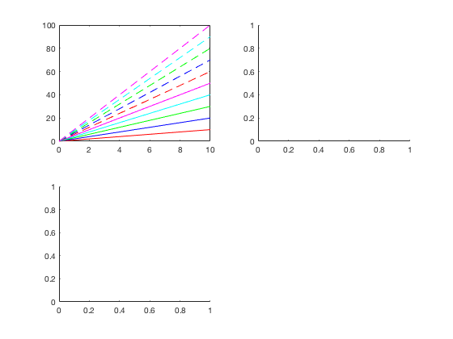
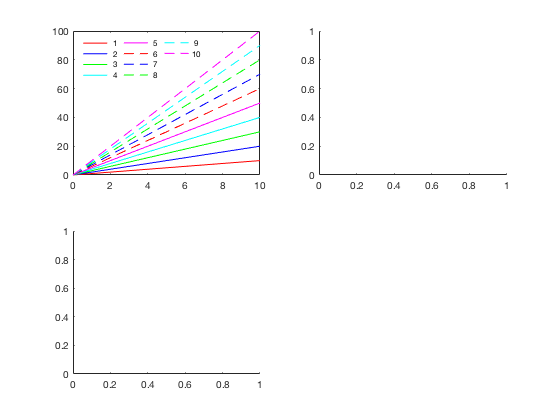
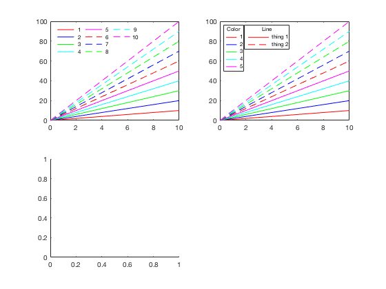
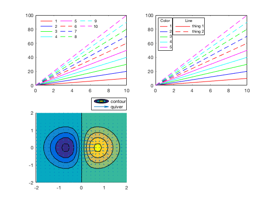
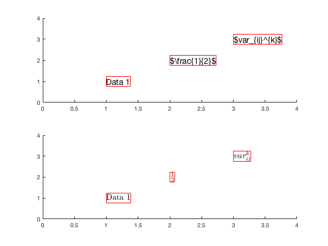

legendflex.m: a more flexible, customizable legend
Author: Kelly Kearney
This repository includes the code for the legendflex.m Matlab function, along with all dependent functions required to run it.
This function offers a more flexible version of the legend command. It offers a different method of positioning the legend, as well as options to:
- organize legend text and symbols in a grid with a specified number of rows and/or columns
- rescale the horizontal space used by each legend symbol
- create multiple legends for the same axis
- add a title to the legend within the legend box
This function should support all types of plot objects.
Legend positioning
Unlike in the default legend command, where the legend is positioned relative to the labeled objects' parent axis according to one of 16 location strings, this function positions the legend based on two anchor points (one on either the figure or a child object of a figure, and one on the legend itself) and a buffer (or offset) between these two anchor points. The anchor points refer to the corners and centers of each side of the box surrounding the reference object and the legend itself; they can be refered to either as numbers (1-8, clockwise from northwest corner) or strings ('nw', 'n', 'ne', 'e', 'se', 's', 'sw', 'w'). The position of the legend is determined by these two points and the distance between them, defined in the 'buffer' variable, which by default is measured in pixels. So the combination of
(..., 'ref', gca, 'anchor', [3 3], 'buffer', [-10 -10])
means that you want the northeast corner of the current axis to be aligned with the northeast corner of the legend, but with the legend shifted 10 pixels to the left and down.
This method of positioning can be particularly useful when labeling a figure that includes many subplots that share a common color scheme, where the "best" location for a legend is not necessarily within the bounds of an axis. Unlike the legend command, the axes in the figure are never resized (and it is up to the user to check that the legend fits on the figure in the specified location). In addition to being easier than manually positioning a legend, this function updates the legend location when the figure is resized, preserving the desired alignment. The following anchor/buffer combinations, when used with the default reference and a buffer unit of pixels, approximately replicate the typical legend locations:
Specifier Anchor Buffer
north [2 2] [ 0 -10] south [6 6] [ 0 10] east [4 4] [-10 0] west [8 8] [ 10 0] northeast [3 3] [-10 -10] northwest [1 1] [ 10 -10] southeast [5 5] [-10 10] southwest [7 7] [ 10 10] northoutside* [2 6] [ 0 10] southoutside* [6 2] [ 0 -10] eastoutside* [3 8] [ 10 0] westoutside* [8 3] [-10 0] northeastoutside* [3 1] [ 10 0] northwestoutside* [1 3] [-10 0] southeastoutside* [5 7] [ 10 0] southwestoutside* [7 5] [-10 0]
*placed outside axis rather than resizing plot box
Contents
Getting started
Prerequisites
This function requires Matlab R14 or later.
Downloading and installation
This code can be downloaded from Github or the MatlabCentral File Exchange. The File Exchange entry is updated daily from the GitHub repository.
Matlab Search Path
The following folders need to be added to your Matlab Search path (via addpath, pathtool, etc.):
legendflex-pkg/legendflex legendflex-pkg/setgetpos_V1.2
Syntax
legendflex(M, param1, val1, ...) legendflex(h, M, param1, val1, ...) [legend_h,object_h,plot_h,text_str] = legendflex(...)
Input variables:
- M: cell array of strings, labels for legend
- h: handle of axis or handle(s) of object(s) to be labeled. If this is an axis handle, all children of the axis will be included in the legend. If not included, current axis is used.
Optional input variables (passed as parameter/value pairs): [default]
- ncol: number of columns, or 0 to indicate as many as necessary given the # of labeled objects [1 if nrow is 0, 0 otherwise]
- nrow: number of rows, or 0 to indicate as many as necessary given the # of labeled objects [0]
- ref: handle of object used to position the legend. This can be either a figure or a child object of a figure (and does not need to relate in any way to the objects being labeled). If not included, the reference will be to the axis that a normal legend would be associated with (usually the parent axis of the labeled objects, unless objects from multiple axes are passed, in which case it's the parent object of the first labeled object).
- anchor: 1 x 2 array specifying which points of the reference object and new legend, respectively, to anchor to each other. Anchor points can be described using either numbers (in a 1 x 2 double array) or directional strings (in a 1 x 2 cell array) as follows: 1 = 'nw' = upper left corner, 2 = 'n' = center of top edge, 3 = 'ne' = upper right corner, 4 = 'e' = center of right edge, 5 = 'se' = bottom right corner, 6 = 's' = center of bottom edge, 7 = 'sw' = bottom left corner, 8 = 'w' = center of left edge, [[3 3], i.e. {'ne' 'ne'}]
- buffer: 1 x 2 array of horizontal and vertical distance, respectively, from the reference anchor point to the legend anchor point. Distance is measured in units specified by bufferunit. [[-10 -10]]
- bufferunit: unit for buffer distance. Note that this property only affects the units used to position the legend, not the units for the legend itself (which is always a fixed size, based on the space needed to encapsulate the specified symbols and text). The 'normalized' units are normalized to size of the figure. ['pixels']
- box: 'on' or 'off', specifies whether to enclose legend objects in a box ['on']
- xscale: scalar value indicating scale factor to apply to the width required by each symbol, relative to the size used by legend. For example, 0.5 will shorten the lines/patches by half. [1]
- title: A title string to be added inside the legend box, centered, above all legend entries. This can be either a string or a cell array of strings; the latter will produce a multi-line title. If empty, no title is added. ['']
- padding: 1 x 3 array, pixel spacing added to beginning of each column (before symbol), between symbol and text, and after text, respectively. Usually, the default provides the spacing typical of a regular legend, but occassionally the extent properties wrap a little too close to text, making things look crowded; in these cases you can try unsquishing (or squishing, via use of negative values) things via this parameter. [2 1 1]
- nolisten: logical scalar. If true, don't add the event listeners. The event listeners update the legend objects when you change a property of the labeled objects (such as line style, color, etc.). However, the updating requires the legend to be redrawn, which can really slow things down, especially if you're labelling lots of objects that get changed together (if you change the line width of 100 labeled lines, the legend gets redrawn 100 times). In more recent releases, this also occurs when printing to file, so I recommend setting this to true if you plan to print a legend with a large number of labeled objects. The legend will still be redrawn on figure resize regardless of the value of this parameter. [false]
In addition to these legendflex-specific parameters, this function will accept any parameter accepted by the original legend function (e.g. font properties) except 'location', 'boxon', 'boxoff', or 'hide'.
Output variables:
- legend_h: handle of the legend axis. It is not linked to an axis or graphics objects in the same way as a Matlab legend. However, on figure resize, all properties of the legend objects are checked for changes, so adjusting the figure size can re-link the legend to the labeled objects after you have made changes to those objects.
- object_h: handles of the line, patch, and text graphics objects created in the legend
- plot_h: handles of the lines and other objects labeled in this legend
- text_str: cell array of the text strings used in the legend
Examples
First, let's create a subplot with 10 lines, 5 solid and 5 dashed, which cycle through 5 colors:
figure('color','w'); for iax = 1:3 ax(iax) = subplot(2,2,iax); end linespec = [repmat({'r';'b';'g';'c';'m'},2,1), ... [repmat({'-'}, 5, 1); repmat({'--'}, 5, 1)]]; x = [0 10]; y = (1:10)'*x; lbl = cellstr(num2str((1:10)')); hln(:,1) = plot(ax(1), x, y); set(hln(:,1), {'color','linestyle'}, linespec);
Now add a legend in the upper left corner, with the entries arranged in a 4 x 3 grid so it doesn't interfere with the data. We've also decreased the horizontal space used by each legend line:
[hl(1).leg, hl(1).obj, hl(1).hout, hl(1).mout] = ... legendflex(hln(:,1), lbl, 'anchor', {'nw','nw'}, ... 'buffer', [5 -5], ... 'ncol', 3, ... 'fontsize', 8, ... 'xscale', 0.8, ... 'box', 'off');
Plot the same lines in the second subplot. But this time, let's add two legends: one for color, and one for line style. Note that in this case, the second legend is positioned relative to the first, rather than relative to the axis itself:
hln(:,2) = plot(ax(2), x, y);
set(hln(:,2), {'color','linestyle'}, linespec);
[hl(2).leg, hl(2).obj, hl(2).hout, hl(2).mout] = ...
legendflex(hln(1:5,2), lbl(1:5), ...
'anchor', {'nw','nw'}, ...
'buffer', [5 -5], ...
'fontsize',8, ...
'xscale',0.5, ...
'title', 'Color');
[hl(3).leg, hl(3).obj, hl(3).hout, hl(3).mout] = ...
legendflex(hln([1 6],2), {'thing 1', 'thing 2'}, ...
'ref', hl(2).leg, ...
'anchor', {'ne','nw'}, ...
'buffer', [0 0], ...
'fontsize', 8', ...
'title', 'Line');
 Our final subplot simply shows that this function will handle all object types. We plot a contourf plot overlaid with a quiver plot, and label both above the subplot axis.
Well, almost any graphics object. In 2014b, there are some rendering bugs when legend is called with multiple outputs that can cause weird stuff to happen when labeling contour objects; these sorts of issues may continue as the Mathworks updates their graphics further.
[X,Y] = meshgrid(-2:.2:2); Z = X.*exp(-X.^2 - Y.^2); [DX,DY] = gradient(Z,.2,.2); axes(ax(3)); hold on; [c,hcont] = contourf(X,Y,Z); hquiv = quiver(X,Y,DX,DY); [hl(4).leg, hl(4).obj, hl(4).hout, hl(4).mout] = ... legendflex([hcont hquiv], {'contour', 'quiver'}, ... 'anchor',{'ne','se'}, ... 'buffer',[0, 0.01], ... 'bufferunit', 'normalized');
A note on legendflex with LateX
Unfortunately, the Latex renderer doesn't play very nicely with legendflex. It's something that bugs me in my own work too, but I've never been able to come up with a good workaround that would position things properly. The legendflex function repositions everything using the 'Extent' property of all the text in the original legend. However, the extent property of latex-rendered text doesn't always match up with the actual space taken up by the text... not quite sure why this is, and therefore I don't have a reliable way to calculate what that real space is.
Here's an example using plain text objects. Ideally, the red boxes would surround each text object, but in the Latex case, the Extent often leaves space above or below, or practically overlaps the text.
figure;
lax(1) = subplot(2,1,1);
lax(2) = subplot(2,1,2);
txt = {'Data 1', '$\frac{1}{2}$', '$var_{ij}^{k}$'};
nt = length(txt);
na = length(lax);
set(lax, 'xlim', [0 nt+1], 'ylim', [0 nt+1]);
for ii = 1:na
ht(ii,:) = text(1:nt,1:nt,txt, 'parent', lax(ii), ...
'interpreter', 'none', ...
'fontsize', 14);
end
set(ht(2,:), 'interpreter', 'latex');
for ii = 1:na
for it = 1:nt
ex = get(ht(ii,it), 'extent');
rectangle('position', ex, 'parent', lax(ii), 'edgecolor', 'r');
end
end
 Becuase of this, you really need to play around with properties (like padding) in order to get a legendflex legend that uses latex and looks decent. Sometimes generating the legend first, then setting the latex rendering afterwards will help a bit. Other times I generate the legend using a larger font size, then shrink the text back down after it's been positioned. None of these hacks are ideal, but they're the best I've been able to come up with.
Contributions
Community contributions to this package are welcome!
To report bugs, please submit an issue on GitHub and include:
- your operating system
- your version of Matlab and all relevant toolboxes (type ver at the Matlab command line to get this info)
- code/data to reproduce the error or buggy behavior, and the full text of any error messages received
Please also feel free to submit enhancement requests, or to send pull requests (via GitHub) for bug fixes or new features.
I do monitor the MatlabCentral FileExchange entry for any issues raised in the comments, but would prefer to track issues on GitHub.